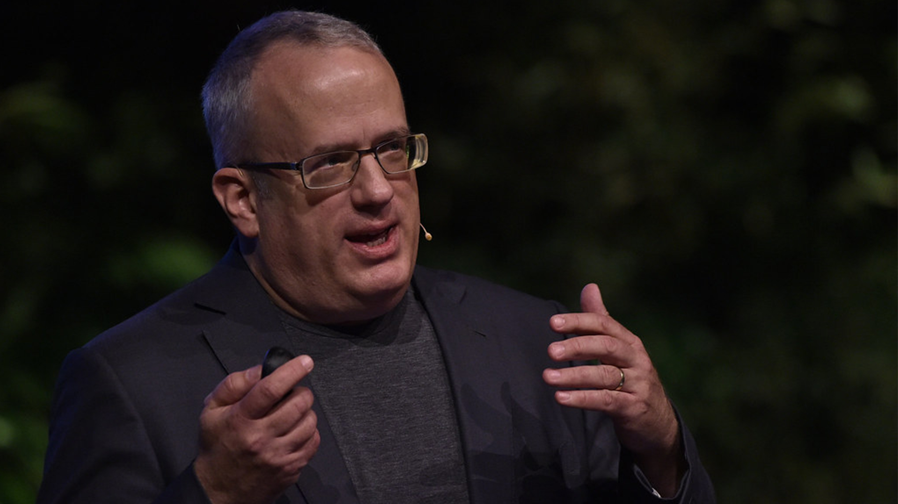

Основные достижения

Создатель JavaScript
Брендан Эйх наиболее известен тем, что в 1995 году, работая в компании Netscape Communications, создал язык программирования JavaScript.
С тех пор JavaScript стал одним из самых популярных языков программирования в мире, который используют миллионы веб-сайтов и разработчиков.
Сооснователь Mozilla
В 1998 году Эйх стал одним из основателей проекта Mozilla, некоммерческой организации, занимающейся созданием программного обеспечения с открытым исходным кодом, в том числе веб-браузера Firefox. Firefox стал одним из самых популярных веб-браузеров в мире, известным своей скоростью, безопасностью и возможностью настройки.
Генеральный директор Mozilla Corporation
С 2014 по 2015 год Эйх занимал должность генерального директора Mozilla Corporation, коммерческой дочерней компании Mozilla Foundation. Во время работы на этом посту он курировал разработку новых продуктов и сервисов, в том числе мобильной операционной системы Firefox OS.
Создатель браузера Brave
В 2015 году Эйх стал одним из основателей компании Brave Software, которая разработала веб-браузер Brave, ориентированный на конфиденциальность и безопасность. Браузер Brave завоевал популярность среди пользователей, обеспокоенных проблемами онлайн-слежки и конфиденциальности данных.
Защитник конфиденциальности в Интернете
На протяжении всей своей карьеры Эйх был активным защитником конфиденциальности и безопасности в Интернете. Он выступал против слежки и наблюдения в Интернете и работал над созданием технологий, защищающих конфиденциальность пользователей.| Брендан Айк | |||
|---|---|---|---|
| Введение | Биография | Интересные факты | Основные достижения |
| Американский программист | Родился 4 июля 1961 года в Питтсбурге | Брендан заядлый читатель | Создатель JavaScript |
| Работал в компании Netscape | Окончил Иллинойский университет | Айк женат на своей супруге Трейси, у них двое детей | Сооснователь Mozilla |
| Создатель языка программирования JavaScript | Начал свою карьеру в Silicon Graphics | Айк создал JavaScript всего за 10 дней | Генеральный директор Mozilla Corporation |
| Участвовал в основании Mozilla | Его вклад в ИТ-индустрию достаточно велик | В свободное время любит ходить в походы и играть на гитаре | Создатель браузера Brave |